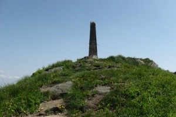
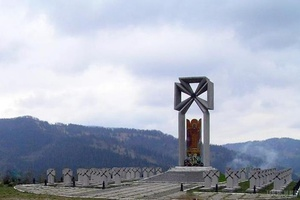

Пара́шка, або Параска — гора в Українських Карпатах, найвища вершина однойменного хребта (Парашка) в Сколівських Бескидах.
Висота 1268,5 м над рівнем моря (за іншими даними — 1271 м). Розташована на відстані 8 км на північний захід від м. Сколе Львівської області. На схилі гори встановлений пам'ятний камінь, на вершині — хрест.
За легендою гора названа на честь Параски — дочки (згідно з іншими версіями — жінки) князя Святослава Володимировича, сина Володимира Великого, яка була вбита на цій горі дружинниками Святополка Окаянного в 1015 році. Цій події передувала битва між Святославом та Святополком біля міста Сколе.
Парашка розташована на території Національного природного парку «Сколівські Бескиди». Через вершину проходить знакований туристичний маршрут «м. Сколе — г. Парашка — с. Майдан» загальною протяжністю 28 км.
Сховати карту району
Маршрут #5 г. Пікуй (з с.Сянки)

Піку́й — найвища вершина Вододільних Бескидів і всього пасма Бещад, найвища географічна точка Львівської області. Розташована на межі Львівської та Закарпатської областей. Дістатися гори Пікуй можна по-різному. Польські туристи зазвичай прямують зі Львова електричкою до станції Сянки. Можна й автобусом доїхати до села Кривка, Біласовиці або до Гусного. Та найкраще добиратися до Либохори. Тут працівники місцевого лісового господарства гостинно зустрінуть і за певну плату довезуть до перевалу «Руська Путь», що на висоті бл. 1200 м над рівнем моря. Від Либохори до перевалу шлях недовгий — трохи більш ніж 3 км, однак стрімкий. З перевалу до вершини гори — 8 км, підніматися пішки втоптаною віками стежкою.
Сховати карту району
Маршрут #6 г. Маківка

Ма́ківка — гора у Високому Бескиді, за 8 км на північ від Славська. Висота — 958 м.
Місце запеклих боїв 29 квітня — 4 травня 1915 року легіону Українських Січових Стрільців (семи сотень першого та другого куренів у складі 55-ої піхотної австрійської дивізії Ігнаці фон Фляйшмана) з російськими військами генерала Альфтана, що мали чисельну перевагу. У 1920-х роках члени УВО, а згодом ОУН започаткували встановлення хрестів полеглим за волю України поблизу центральної вершини Маківки. У 1930-х українська молодь розпочала масові паломництва на «горбочок» на Маківці.